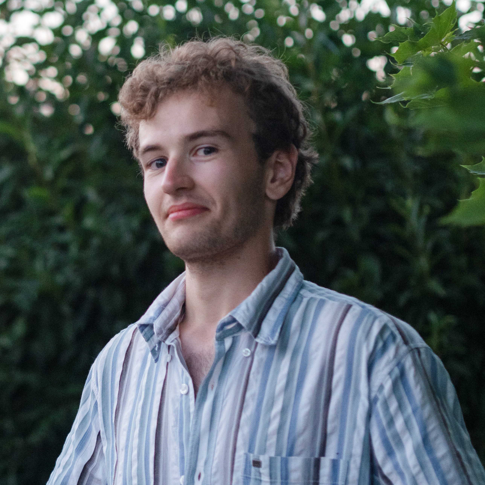

Un peu plus sur moi
Passionné de création, de design et d’art visuels, je cultive une curiosité et une pratique du design transversales. Porté sur l’interactivité ainsi que le web, je réfléchis autant le design que je le pratique. Je poursuis ma formation au sein de l'USPN, permettant de développer un regard critique autour du design et du numérique.
J’aspire à devenir designer, sans m’imposer de frontières entre les domaines de créations, en restant ouvert aux différentes occasions.
En dehors du design, j’apprécie le vélo, la rando, la nature et le jeux-vidéo.

Curriculum Vitae
- Master 2 - USPN - 2025 > 2026
Design d'interface, multimédia et internet - Stage Webdesigner - Crédit Agricole Immobilier - Mars > Août 2025
- Master 1 - USPN - 2025/2026
Design d'interface, multimédia et internet - DNMADE - Lycée Jean Monnet - 2020 > 2023 Design numérique, interaction et interface
- Stage Webdesigner - Alec 18 - 3 mois 2022
- Stage Graphiste/communication - Mairie d'Aubigny-Sur-Nère - 2 semaines 2021